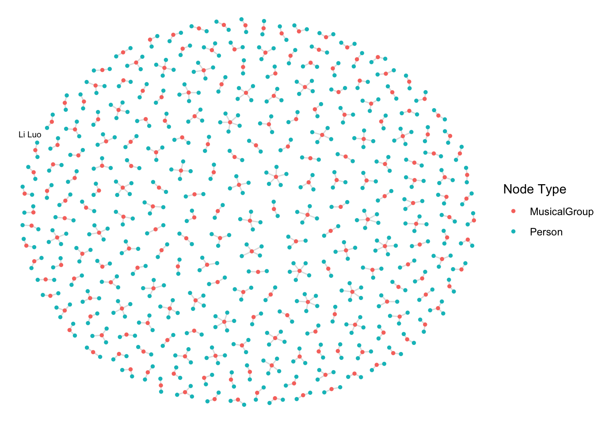

pacman::p_load( tidygraph, ggraph,
jsonlite, SmartEDA,
tidyverse)In-class Exercise 5–MC1 Kickstarter
Overview
By the end of this handson exercise, I will be able to:
import Mini case 1 data file R object, split the knowledge graph into nodes and edges tibble data frames, tidy nodes and edges tibble data frames for conforming to the requirements of tidygraph, create a tidygrpah object by using the tidied nides and edges, and visualise the tidygraph
Getting Started
For the purpose of this exercise, four R packages will be used. They are tidyverse, jsonlite, tidygraph and ggraph.
In the code chunk below, p_load() of pacman package is used to load the R packages into R environemnt.
For the purpose of this exercise, MC1_graph.json file will be used. Before getting started, you should have the data set in the data sub-folder.
In the code chunk below, fromJSON() of jsonlite package is used to import MC1_graph.json file into R and save the output object
kg <- fromJSON("data/MC1_graph.json")Before preparing the data, it is always a good practice to examine the structure of kg object.
In the code chunk below str() is used to reveal the structure of kg object.
str(kg, max.level = 1)List of 5
$ directed : logi TRUE
$ multigraph: logi TRUE
$ graph :List of 2
$ nodes :'data.frame': 17412 obs. of 10 variables:
$ links :'data.frame': 37857 obs. of 4 variables:Extracting the edges and nodes tables
Next, as_tibble() of tibble package package is used to extract the nodes and links tibble data frames from kg object into two separate tibble data frames called nodes_tbl and edges_tbl respectively.
nodes_tbl <- as_tibble(kg$nodes)
edges_tbl <- as_tibble(kg$links)Initial EDA
It is time for us to apply appropriate EDA methods to examine the data.
In this code chunk below, ggplot2 functions are used the reveal the frequency distribution of Edge Type field of edges_tbl.
ggplot(data = edges_tbl,
aes(y = `Edge Type`))+
geom_bar()
On the other hands, code chunk below uses ggplot2 functions to reveal the frequency distribution of Node Type field of nodes_tbl.
ggplot(data = nodes_tbl,
aes(y = `Node Type`))+
geom_bar()
Creating Knowledge Graph
step1 mapping from node id to row index
Before we can go ahead to build the tidygraph object, it is important for us to ensures each id from the node list is mapped to the correct row number. This requirement can be achive by using the code chunk below.
id_map <- tibble(id=nodes_tbl$id,
index = seq_len(
nrow(nodes_tbl)
))step 2 map source and target IDs to row indices
Next, we will map the source and the target IDs to row indices by using the code chunk below.
edges_tbl <- edges_tbl %>%
left_join(id_map , by = c("source" = "id")) %>%
rename(from = index) %>%
left_join(id_map, by=c("target" = "id")) %>%
rename(to = index)step 3 filter out any unmatched
Lastly, the code chunk below will be used to exclude the unmatch edges.
edges_tbl <- edges_tbl %>%
filter(!is.na(from),!is.na(to))step 4 creating the graph
Lastly, tbl_graph() is used to create tidygraph’s graph object by using the code chunk below.
graph <- tbl_graph(nodes = nodes_tbl,
edges = edges_tbl,
directed = kg$directed)confirm the output object is indeed in tidygraph format by using the code chunk below.
class(graph)[1] "tbl_graph" "igraph" Visualising the knowledge graph
In this section, we will use ggraph’s functions to visualise and analyse the graph object.
Several of the ggraph layouts involve randomisation. In order to ensure reproducibility, it is necessary to set the seed value before plotting by using the code chunk below.
set.seed(1234)##Visualising the whole graph
In the code chunk below, ggraph functions are used to visualise the whole graph.
ggraph(graph, layout = "fr") +
geom_edge_link(alpha = 0.3,
colour = "gray") +
geom_node_point(aes(color = `Node Type`),
size = 4) +
geom_node_text(aes(label = name),
repel = TRUE,
size = 2.5) +
theme_void()
Notice that the whole graph is very messy and we can hardy discover any useful patterns. This is always the case in graph visualisation and analysis. In order to gain meaningful visual discovery, it is always useful for us to looking into the details, for example by plotting sub-graphs.
Visualising the sub-graph
In this section, we are interested to create a sub-graph base on MemberOf value in Edge Type column of the edges data frame.
Step 1 : Filtering edges to only “MemberOf”
graph_memberof <- graph %>%
activate(edges) %>%
filter(`Edge Type` == "MemberOf")step2 Extracting only connected nodes (i.e., used in these edges)
used_node_indices <- graph_memberof %>%
activate(edges) %>%
as_tibble() %>%
select(from, to) %>%
unlist() %>%
unique()step 3: Keeping only those nodes
graph_memberof <- graph_memberof %>%
activate(nodes) %>%
mutate(row_id = row_number()) %>%
filter(row_id %in% used_node_indices) %>%
select(-row_id) #optional cleanupstep 4: Plotting the sub-graph
ggraph(graph_memberof, layout = "fr") +
geom_edge_link(alpha = 0.5, colour = "gray") +
geom_node_point(aes(color = `Node Type`), size = 1) +
geom_node_text(aes(label = name), repel = TRUE, size = 2.5) +
theme_void()
Notice that the sub-graph above is very clear and the relationship between musical group and person can be visualise easily.